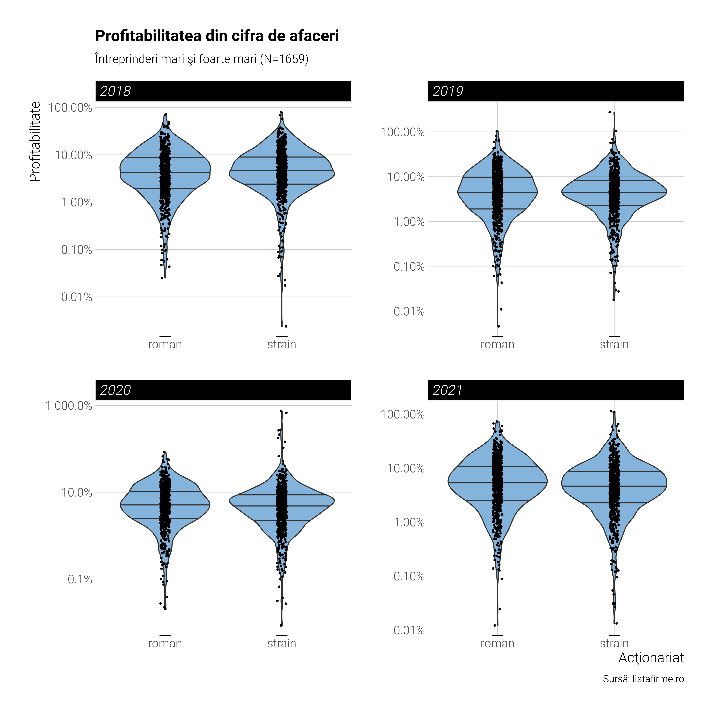

S-a tot vorbit în spaţiul public despre profitabilitatea multinaţionalelor, despre cum ar declara profituri mai mici ca să se fenteze plata impozitelor (ca şi cum cele mici n-ar face tot la fel). Totul a plecat de la un articol cu ton naţionalist virulent despre presupusele “căpuşe”, 50 de multinaţionale, care ar “suge sângele poporului român” prin neplata taxelor. Mulţi economişti autohtoni au ieşit să apere onoarea multinaţionalelor - că ar investi, că de fapt doar în 2022 au declarat profituri mai mici, că au plătit deja contribuţii sociale şi salarii, că iniţiatorul discuţiei e un analfabet economic şi funcţional, etc. Multe din aceste articole sunt în regulă şi aduc perspective necesare discuţiei. Dar nu am văzut însă o analiză sistematică a profitabilităţii firmelor mari pe subgrupuri: capital majoritar străin vs capital majoritar românesc. Şi nu doar top 50 sau top 100, ci pe toate firmele mari. Poate că firmele mari străine nu au profit neapărat mai mic decât cele româneşti, caz în care discuţia ar trebui încheiată. Sigur, există şi contrarienii: pentru ei nimic nu e bun. Dacă fac profit mai mic, mint, dacă fac profit mai mare, ne fură. Deci practic ne fură oricum o dai. Dar vom asuma că cititorul este o persoană de bună credinţă fără biasuri de acest fel. M-am gândit că e o ocazie bună să fac eu o asemenea analiză care lipseşte momentan.
În acest scop am folosit baza de date a platformei listafirme.ro pentru că datele despre firme puse la dispoziţia publicului de către instituţiile statului nu conţin câmpuri referitoare la tipul de acţionariat (străin sau românesc). A trebuit să-mi fac un cont şi să plătesc circa 30 de RON pentru toate CUI-urile firmelor cu capital străin şi românesc clasificate drept “întreprinderi mari şi foarte mari”, circa 800 de firme în fiecare categorie. Apoi am folosit CUI-urile ca să identific firmele din baza de date a platformei coduricaen.ro, de data aceasta oferite gratis pentru cei cu cont (tot gratuit). Puteam folosi datele de pe data.gov.ro ca în analizele precedente, dar erau deja identificate şi prelucrate de erorile obişnuite. Singurul dezavantaj e că nu s-au actualizat încă pe anul 2022. Dar avem de la 2018 încolo.
Pentru început vom ilustra câteva statistici exploratorii prin grafice şi tabele şi apoi vom trece la modelarea statistică efectivă.
Vedem o uşoară scădere pentru media profitabilităţii firmelor străine. Deşi în 2018 era egalitate, în ultimii ani apare un ecart uşor, mai mare în 2020 decât în 2021. Deci fără o direcţie evidentă.
Mai departe, să vizualizăm nişte distribuţii. Tot pe ani. Liniile negre orizontale sunt mediana şi cele două cuartile ale distribuţiei.
Code
selectie %>%mutate(profit =100*ProfitNetRON/CifraDeAfaceriNetaRON) %>%filter(!is.infinite(profit)) %>%ggplot(aes(x=actionariat, y=profit)) +geom_violin(draw_quantiles =c(0.25, 0.5, 0.75), fill='steelblue3', alpha=0.7) +geom_jitter(width =0.04, size=0.5) +scale_y_continuous(labels=scales::percent_format(scale=1), trans ='log10') +facet_wrap(~year, ncol=2, scales='free') +labs(title ="Profitabilitatea din cifra de afaceri", subtitle="Întreprinderi mari şi foarte mari (N=1659)", y="Profitabilitate", x="Acţionariat", caption='Sursă: listafirme.ro') +theme(panel.grid.minor.y =element_blank(),strip.background =element_rect(fill='black', colour ='white'),strip.text=element_text(colour='white'))

Ce răzbate în acest grafic e similaritatea celor două distribuţii. Sunt foarte asemănătoare având în vedere ce eterogenă e orice economie, nu doar cea românească. De fapt nu e aşa surprinzător. Raportul a două variabile distribute gausian e distribuit la rândul lui după distribuţia Cauchy, o distribuţie cu “fat tails”. Distribuţia T cu un grad de libertate este tot distribuţia Cauchy, şi vom folosi distribuţia T ca să modelăm profitabilitatea (pentru că nu e tocmai gausiană după cum am spus). Gradul de libertate ales e cel care se potriveşte cel mai bine datelor. Dar până atunci, să vedem profitabilitatea după sectorul de activitate şi să numărăm câte firme din fiecare categorie sunt în fiecare range de profitabilitate. Pentru ultimul scop vom împărţi profitabilitatea în decile (intervale de 10 %) şi vom număra ce procent din total din cele două categorii se află în fiecare decilă de profitabilitate.
Foarte similare procentele, ceea ce ne spune că atât firmele străine cât şi cele româneşti se află destul de uniform distribuite în toate intervalele de profitabilitate. Doar la top 10 % cele mai profitabile firme sunt destul de multe firme româneşti vs străine. (12.26 % vs 7.91 %). Profiturile super mari tind să fie făcute de firme româneşti mai degrabă, dar nu exclusiv.
Se pare că avem marje destul de diferite între sectoare şi ar trebui să ţinem cont şi de această variabilă în comparaţii.
Dat fiind că avem date referitoare la salariaţi şi cotă de piaţă (un indicator important al gradului de oligopol/monopol) şi sector de activitate trecem la modelarea statistică. Încercăm să ajustăm printr-o regresie robustă la outlieri (cu distribuţia T-student cum am zis, cu cinci grade de libertate care a fost selectată ca fiind cea mai potrivită) la numărul de salariaţi, cota de piaţă şi sectorul de activitate. Mai jos este modelul sumarizat.
Family: student
Links: mu = identity; sigma = identity; nu = identity
Formula: log10(ROS) ~ (1 | sector) + actionariat + log10(Salariati) + log10(CotaDePiata)
Data: selectie %>% filter(!is.infinite(ROS)) %>% filter( (Number of observations: 1410)
Draws: 4 chains, each with iter = 2000; warmup = 1000; thin = 1;
total post-warmup draws = 4000
Group-Level Effects:
~sector (Number of levels: 18)
Estimate Est.Error l-95% CI u-95% CI Rhat Bulk_ESS Tail_ESS
sd(Intercept) 0.16 0.04 0.09 0.25 1.00 1006 1750
Population-Level Effects:
Estimate Est.Error l-95% CI u-95% CI Rhat Bulk_ESS Tail_ESS
Intercept 1.24 0.09 1.06 1.42 1.00 2614 2061
actionariatstrain -0.08 0.03 -0.13 -0.03 1.00 4129 2920
log10Salariati -0.18 0.03 -0.24 -0.12 1.00 4369 3128
log10CotaDePiata 0.09 0.02 0.05 0.13 1.00 4434 2947
Family Specific Parameters:
Estimate Est.Error l-95% CI u-95% CI Rhat Bulk_ESS Tail_ESS
sigma 0.38 0.01 0.36 0.40 1.00 2924 3016
nu 5.20 0.74 3.98 6.84 1.00 3329 2867
Draws were sampled using sample(hmc). For each parameter, Bulk_ESS
and Tail_ESS are effective sample size measures, and Rhat is the potential
scale reduction factor on split chains (at convergence, Rhat = 1).
Au fost logaritmate şi variabilele independente şi cea dependentă (profitabilitatea) pentru a avea distribuţii cât de cât simetrice şi pe aceiaşi scală numerică. Altfel estimarea va avea de suferit. Avem deci un model dublu-logaritmic (coeficienţii au semnificaţia unor elasticităţi) cu erori robuste şi potrivit pentru ‘fat tails’. Ce observăm ? Cota de piaţă se asociază pozitiv cu profitabilitatea (logic), iar mărimea prin numărul de salariaţi negativ (de asemenea de aşteptat cumva). Acţionariatul străin scade cu 0.08 % profitabilitatea per firmă ajustat la cotă, salariaţi şi sector. E o diferenţă mai mică decât a relevat analiza simplă a mediilor pe ani. Doar că avem aici şi un interval de încredere aici, între -0.13 % şi -0.02 %. Acest lucru înseamnă că statistic suntem destul de siguri că acţionariatul străin are un efect negativ asupra profitabilităţii doar că efectul poate fi destul de mic, mult mai mic de 0.08 %, practic neglijabil. Trebuie să comparăm mere cu mere şi pere cu pere. Dar ne permite oare metoda de mai sus să facem acest lucru ?
Nu întocmai. Regresiile simple de acest fel suferă de ceea ce se cheamă “model dependence”: specificaţiile funcţionale ale covariatelor (cota şi salariaţii) ne dictează în mare măsură efectul descoperit. Cu alte cuvinte dacă am fi asumat polinomiale sau alte funcţii pentru cotă şi salariaţi, efectul ar fi fost altul. Nu vrem ca nişte specificaţii “out of the box” să ne afecteze interpretarea prea mult. Ca să evităm acest lucru încercăm o tehnică de inferenţă cauzală (quasi-experimentală) numită matching.
3 Inferenţă cauzală prin matching
Matching-ul încearcă să asocieze observaţii similare din punct de vedere al covariatelor (cotă şi salariaţi, de exemplu) din cele două grupuri. Astfel, într-o versiune de matching (există multiple forme şi algoritmi) o observaţie din grupul de firme româneşti primeşte cea mai apropiată observaţie din grupul de firme străine şi tot aşa. Fiecare observaţie primeşte o “greutate”, un fel de coeficient în funcţie de distanţele dintre ele, greutate care e folosită în modelul regresiei prin OLS şi astfel obţinem efectul “cauzal”. Nu am intrat în detalii prea tehnice pentru a nu lungi o discuţie deja lungă.
Impactul cauzal conform acestui model este de numai -0.077 %, semnificativă statistic, deviaţia standard a efectului fiind de 0.027 %. Practic nu mai mult decât -0.12 % este de aşteptat să fie impactul acţionariatului străin asupra profitabilităţii firmei. Practic la fel ca metoda regresiei.
Oricum ar fi, că optăm pentru modelul quasi-cauzal, cel al ajustării prin regresie simplă sau chiar media neajustată, diferenţa este, cred eu, mică şi nu poate fi spus mare lucru pe seama ei. Ca de obicei, pe teme economice e mult zgomot care acoperă o realitate mai complexă şi mai frustrantă pentru cei ce vânează slogane şi soluţii simple. Profitabilitatea nu e un indicator care să trezească suspiciuni vis-a-vis de practicile de business ale marilor corporaţii străine, aşa cum am arătat aici. Mai interesant e că circa 20-25 % din ele declară profit mai mic de 1 % în aceşti ani. Cele româneşti 21.5 %, cele străine 25.4 %. Deci departe de a ne “fura” NUMAI străinii.